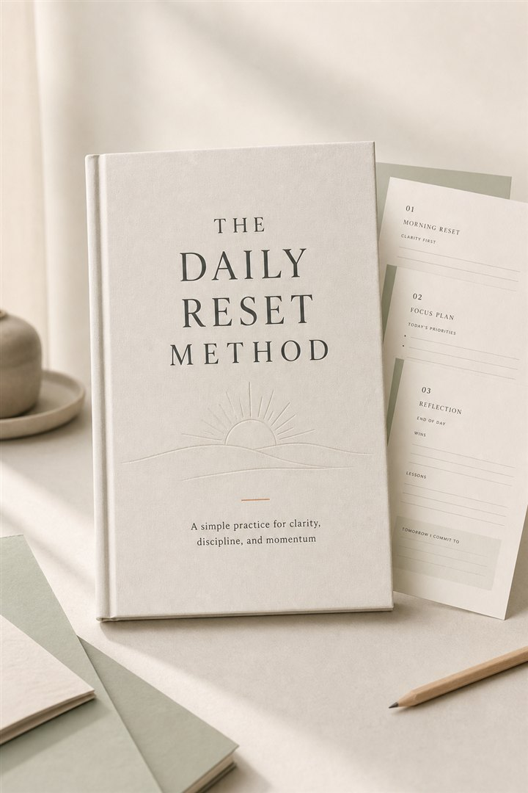

Clarity reset
Sort urgent noise from meaningful priorities before the day runs you.
A calmer path back to yourself
A gentle, structured ebook to help you clear the mental noise, rebuild daily discipline, and move forward one intentional day at a time.
Get The EbookDigital download · Beginner friendly · Designed for 10-minute daily use

When effort still feels scattered
The hardest part is often not knowing what to do. It is waking up with good intentions, then losing your direction inside a crowded day.
You make plans, but rarely feel the satisfaction of following through.
You stay busy, while the priorities that matter most drift.
You promise yourself a fresh start every Monday.
You save advice and routines, but still feel stuck in the same cycle.
You know enough. What you need is a way to return to consistency.
The reset is deliberately simple
The Daily Reset Method helps you pause, name what matters, choose a small next action, and notice your progress. It is not a complete life overhaul. It is a reliable way to begin again today.
Inside the ebook
Sort urgent noise from meaningful priorities before the day runs you.
Choose a realistic focus so your effort has somewhere clear to land.
Understand what disrupted your rhythm without turning it into self-criticism.
Make small promises you can keep, then let confidence follow evidence.
See what is working, release what is not, and enter next week lighter.
Watch quiet consistency build instead of measuring yourself by perfect days.
A look inside
Short prompts help you move from mental noise to one deliberate decision, without turning reflection into another demanding task.
Morning clarity reset
Name one priority before distractions decide for you.
Daily focus planner
Weekly momentum review
Notice progress you might otherwise overlook.
You do not need a complicated routine. You need a reset you can repeat.
Get The EbookWhat changes
A reset practice creates space between how you feel and what you do next. That small space is where consistency starts.
How it works
Understand the reset approach in plain language, without a complicated new routine.
Take a few minutes to reflect, refocus, and choose what a good day requires.
Notice patterns and progress, so you keep improving without starting from zero.
Why it stays usable
A ten-minute reset is easier to return to when your schedule is already crowded.
Each reflection turns inward clarity into one realistic step you can complete.
Weekly review helps you learn from interruptions instead of treating them as failure.
The thinking behind the method
This guide is organized around a simple premise: clarity becomes useful when it leads to a small commitment you can keep today.
That is why the method uses brief daily prompts, a focused action, and a weekly moment to notice patterns. It gives you a steady practice without asking you to become a different person overnight.
Made for a real season of life
When you are ready for a calmer next step, the method is ready for you.
Get The EbookOur promise Use it for thirty days. If your mornings aren’t calmer, reply to your receipt and we’ll refund you. Keep the book.
Questions
Yes. It is written for anyone beginning again, with clear prompts and no previous habit system required.
Most readers can complete the daily reset in about ten minutes, with a slightly longer weekly review.
Both are addressed practically: clearer thinking leads into a focused action and a repeatable habit.
That is exactly when the short prompts are most helpful. The method is designed to reduce decisions, not add pressure.
Yes. You receive a digital ebook designed for reading on your device or printing pages for personal use.
No special tools are needed. A notebook or printed pages and a few quiet minutes are enough.
Start with today
You only need a simple place to pause, reset, and take your next step with more clarity than yesterday.
A low-pressure next step toward a steadier daily rhythm.
Digital edition includes
View purchase details and digital access information on the next page.